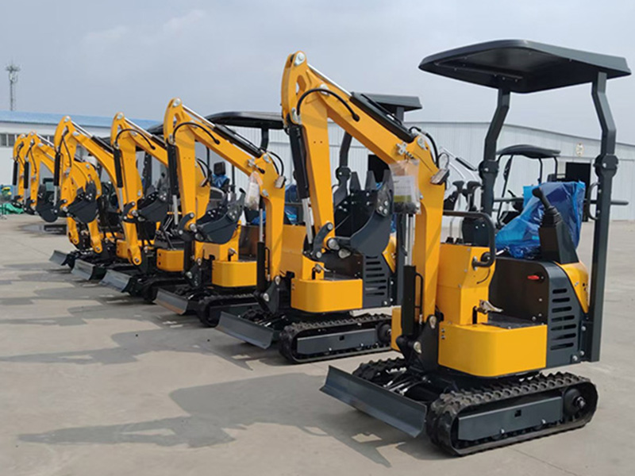
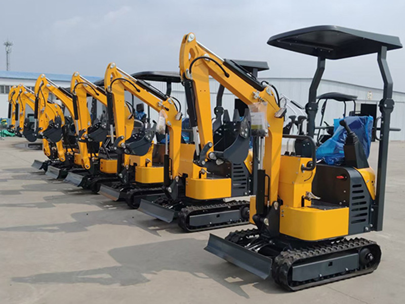

Nossos Produtos
 

Escavadeira YD-10 (1 tonelada)
O YD-10 é a solução ideal quando agilidade e espaço são cruciais. Compacta, versátil e equipada com joystick de alta precisão e radiador de óleo hidráulico, oferece potência e confiabilidade em qualquer cenário. Indicada para paisagismo, reformas internas, abertura de valas em quintais e trabalhos em áreas estreitas, a YD-10 une eficiência e praticidade.
- Design Ultra-Compacto: Acesso a áreas antes inalcançáveis, como corredores, estreitos e interiores de edificações.
- Motor de Alta Eficiência: Reduz custos de operação, oferecendo baixo consumo e excelente desempenho.
- Peso Operacional de 1 Tonelada: Fácil de transportar, com impacto mínimo em superfícies sensíveis.
- Operação Intuitiva: Joysticks hidráulicos garantem curva de aprendizado rápida, maior controle e segurança.
- Alcance Operacional: Profundidade de escavação de 1,63 m. Altura máxima de 2,75 m. Alcance de trabalho de 2,10 m.
Escavadeira YD-18 (1.8 toneladas)
A YD-18T representa a evolução da força para projetos mais exigentes. Com 1,8 tonelada de peso operacional e sistema hidráulico superior, oferece robustez e durabilidade para escavações profundas, transporte de materiais pesados e jornadas contínuas em canteiros de obras. Versátil e resistente, é a escolha perfeita para quem busca ampliar serviços e enfrentar desafios maiores com confiança.
- Maior Força de Escavação: Enfrenta solos compactados com rapidez e eficiência.
- Chassi Robusto: Estabilidade superior em terrenos irregulares e vida útil prolongada.
- Versatilidade Ampliada: Compatível com implementos de alta performance, como rompedor hidráulico e broca.
- Plataforma Ergonômica: Conforto e segurança, para jornadas mais produtivas.
- Alcance Operacional: Profundidade de escavação de 2,10 m. Altura máxima de 2,82 m. Alcance de trabalho de 3,80 m.
Broca Hidráulica
Perfuração precisa, resultados sólidos.
Transforme sua escavadeira RBK em uma solução de perfuração profissional. A Broca Hidráulica é ideal para criar furos em cercas, postes, estacas, fundações e até no planejamento em série, garantindo rapidez e precisão em diferentes tipos de solo. Seu alto torque proporciona eficiência mesmo em compactados, reduzindo o ritmo de trabalho e aumentando sua produtividade.
- Alto Torque de Perfuração: Fura até os solos mais resistentes.
- Acoplamento Rápido e Seguro: Instalação simples e eficiente.
- Construção Robusta: Resistência e durabilidade para uso contínuo.
- Compatibilidade Total: Opera em perfeita harmonia com os modelos YD-10 e YD-18T.
Rompedor Hidráulico
A força de impacto que abre caminho.
Projetado para trabalhos pesados, o Rompedor Hidráulico RBK entrega potência extrema para quebrar concreto, rochas, asfalto e obstáculos no solo. Com sistema de percussão avançado, estrutura reforçada e vibração reduzida, ele garante desempenho superior em obras de demolição, abertura de valas e preparação de terrenos.
- Energia de Impacto Superior: Quebra materiais resistentes em tempo recorde.
- Durabilidade Extrema: Construído em aço de alta resistência para suportar uso intenso.
- Vibração Reduzida: Mais conforto ao operador e proteção ao equipamento.
- Potência Controlada: Domínio total sobre a força aplicada, ideal para trabalhos seletivos.